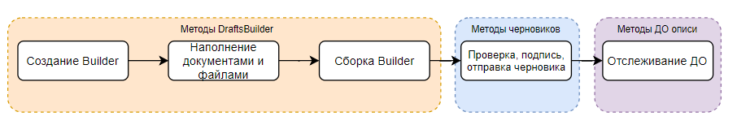

Опись — ответ на требование¶
Опись может быть направлена как ответ на требования с КНД 1165013 и 1165050. Также ее можно направить, чтобы представить документы к налоговой декларации.
Опись ссылается на требование, в ответ на которое она формируется, и включает список файлов, высылаемых в налоговую. Таким образом, опись в качестве ответа на требование представляет документооборот с типом fns534-inventory. Особенность данного вида документооборота: чтобы отправить опись и следить за документооборотом с налоговым органом, необходимо знать три параметра:
Идентификатор документооборота описи.
Идентификатор входящего документооборота, в ответ на которое посылается опись.
Идентификатор документа требования из входящего документооборота.
Для работы с документооборотом описи и ответными документами в нем был собран отдельный раздел методов «Ответ на требование».
Зачем обязательно создавать опись? Если создать новый документооборот (письмо) с набором документов, то в информационных системах ФНС они не будут связаны с требованием. Тогда не будет соблюдено требование законодательства по срокам ответа.
Процесс работы с описью¶
Примечание
Если файлы пользователя уже приведены к нужному формату и есть XML-файл описи к документам, вы можете пропустить шаги 1-4 по работе с DraftsBuilder и сразу работать с методами черновика документооборота.
Создание DraftsBuilder методом POST CreateDraftsBuilder
Метод создает шаблон черновика описи: для этого нужно передать идентификаторы входящего документооборота и документа в нем, а также пункт требования.
В результате метод вернет идентификатор созданного шаблона DraftsBuilder и все его содержимое.
Пункт требования можно прописать на весь DraftsBuilder — глобальный, а можно на конкретный документ — выборочный. Пункт требования в документе более приоритетный, но если он не заполнен, будет взято значение глобального параметра. Хотя бы в одном месте пункт требования должен быть заполнен обязательно.
Добавление документа POST CreateDraftsBuilderDocument
Чтобы добавить файлы, необходимо сначала добавить для них контейнер — документ. Вызываем столько раз, сколько отдельных документов-контейнеров нужно создать.
Добавление файла POST CreateDraftsBuilderDocumentFile
Метод создает файл в документе. Вызываем столько раз, сколько файлов нужно положить в документ-контейнер.
Сбор DraftsBuilder POST BuildDrafts
Метод собирает все добавленные файлы и документы DraftsBuilder шаблона в черновики. В результате метод вернет идентификаторы черновиков, в каждом из которых находится: XML-файл описи, файлы, сообщение о представительстве (если есть).
Для редактирования содержимого DraftsBuilder смотри описание методов DraftsBuilder.
Работа с черновиком.
Черновик описи проверяется, подписывается КЭП и отправляется при помощи методов для работы с черновиками. После отправки черновика вы получите идентификатор документооборота описи с типом fns534-inventory.
После отправки описи необходимо отслеживать процесс документооборота и его статусы, для этого были реализованы методы документооборота описи.